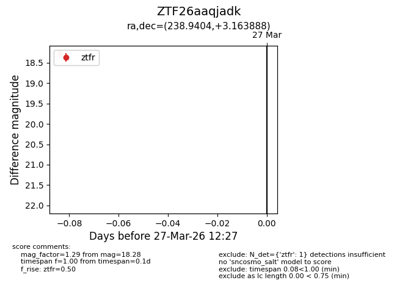
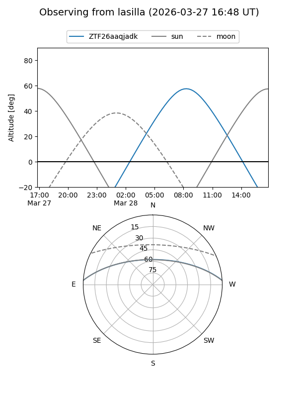
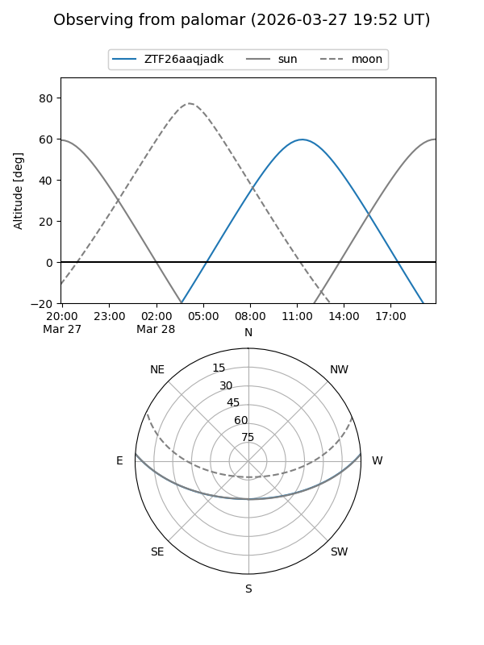

ZTF26aaqjadk
Target ZTF26aaqjadk at 2026-03-27 12:31
Aliases and brokers:
FINK: link
Lasair: link
ALeRCE: link
alt names
ZTF26aaqjadk (ztf,fink_ztf)
Coordinates:
equatorial (ra, dec) = 238.9404,+3.16389
equatorial (HMS+DMS) = 15:55:45.70,+03:09:50.00
galactic (l, b) = (12.5872,+39.90812)
Flags:
Photometry:
last ztfr=18.28
1 ztfr detections
Lightcurve

Visibility


Additional plots